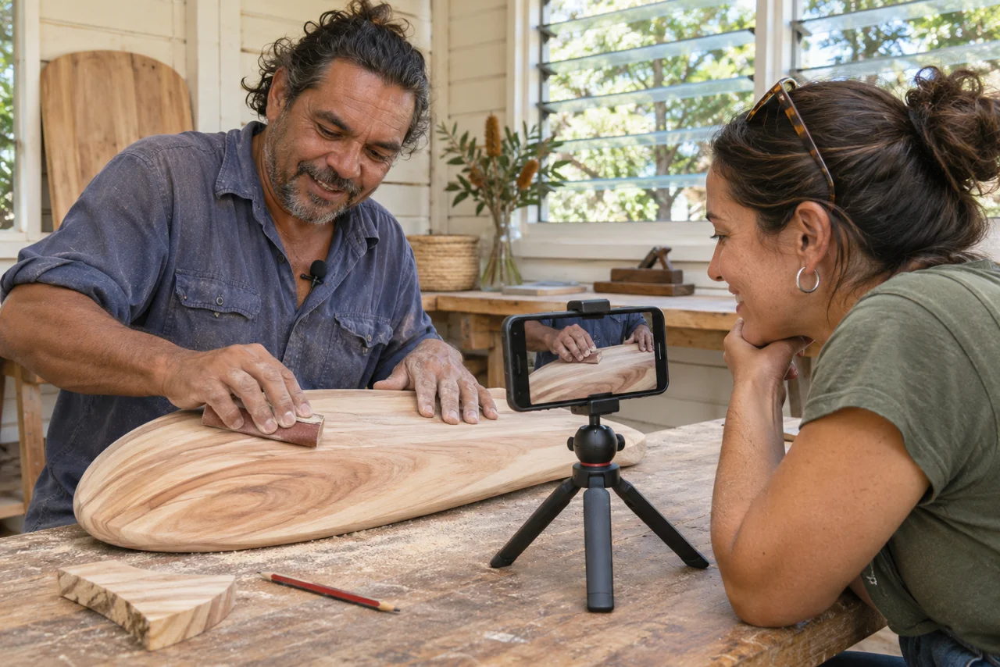

Phone post
Local short films in Dunwich
See how a timber bellyboard takes shape. Saturday, 6.30 pm in the community hall courtyard. Check the organiser’s event page for details.
Proposed beginner workshop
How does a piece of timber become a bellyboard you can ride in the surf? Follow a Minjerribah maker at the workbench. Use a phone to record their answer, edit a one-minute film and invite the community to a screening.
Start with the pitch
You’ll need a phone, a stand or tripod, headphones and an editing app. Ask a maker if they’d like to take part, or rehearse privately with a partner. A mentor can help with the edit and a screen host can check how the finished notice reads.
Use these timings as a guide. Let the strongest answer and the pictures tell you where to cut.
Open on hands sanding the board. Let the recorded sound establish the scene.
Use their name and their answer about how they chose the shape.
Cut from the interview to any marked outline, the hands at work and the detail the maker describes.
Hold a clear shot of the board’s outline and finish. Leave space for the maker and production credits.
Imagine an outdoor screening in a community hall courtyard in Dunwich. In this exercise, the organiser has confirmed a 6.30 pm start. Write that invitation for each display, then practise changing the time.
Local short films in Dunwich
See how a timber bellyboard takes shape. Saturday, 6.30 pm in the community hall courtyard. Check the organiser’s event page for details.
Shaping a timber bellyboard · Local short films
Saturday, 6.30 pm · Community hall courtyard, Dunwich
Local short films and a bellyboard maker profile
Saturday, 6.30 pm · Community hall courtyard, Dunwich
Tap for the programme and the organiser’s details.
Enter the title, publisher, place, summary and expiry in the draft tool. Use https://example.org/ as the source for this exercise and keep the draft in your practice files. For a real event, attach the organiser’s public event link.
Use the same Saturday clock for all three steps. The organiser’s confirmation is the source for the change.
The organiser confirms a 6.30 pm start. Record when the notice was approved, the three display versions and the 7.15 pm take-down.
Record the source and publish version 2 through the same approved channels. Ask the host to replace version 1 and confirm what is visible. Flag any offline display for follow-up.
Check each outlet has removed it from rotation. Keep the checked source, permissions, current clip and a record of what changed.
A first session could use one story and one available screen. The learner completes a useful task with the mentor, then shows a host how to check and remove the practice notice.
Once the crew can hand over a checked story, rehearse a short live introduction for a screening or edit a radio-style profile using the maker’s voice and workshop sound. Confirm permission for that format, check names and facts in the script and make a transcript available.
The workshop adapts the local media curriculum, capture checklist and mentored work handover. Minjerribah Screen & Media Network · Ready SETCO notices & media · Ready SETCO training & work